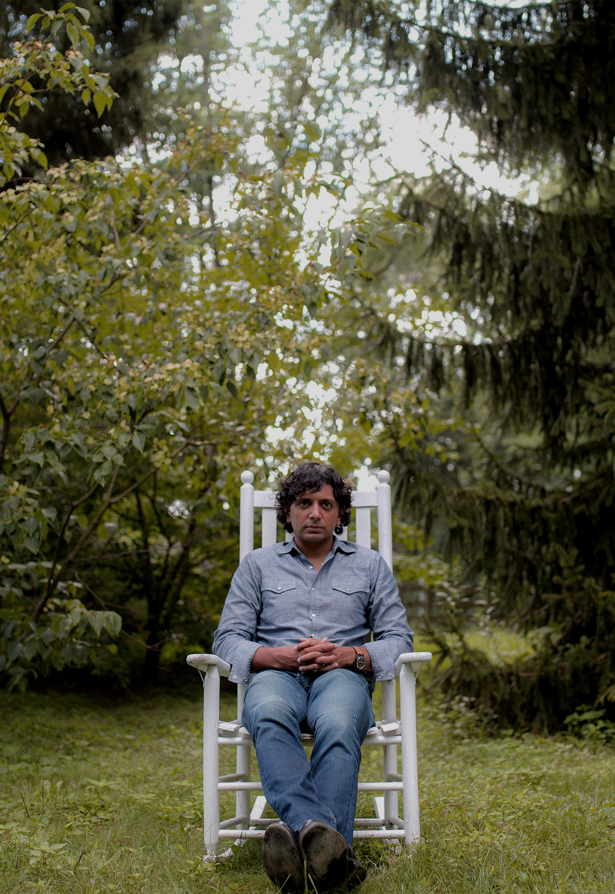

F R A G M E N T A D O
Fragmentado (2016) es la última película del director, guionista y productor M. Night Shyamalan, y es un thriller psicológico en el que su protagonista es un sujeto llamado Kevin (James McAvoy) que sufre de trastorno de identidad disociativo (antes conocido como trastorno de personalidad múltiple), que lo hace convivir con 23 personalidades diferentes.
En este contexto, el joven secuestra a tres adolescentes para ‘alimentar’ a una de esas personalidades, la más peligrosa y dominante conocida como “La Bestia”. Si bien en Kevin coexisten 23 personalidades, en la cinta vemos sólo algunas, las que resultan ser las más hostiles y que han logrado tomar el control de su mente y cuerpo, ocultando a aquellas personalidades adaptadas mejor socialmente.
D I R E C T O R
 El director, guionista, actor y productor M. Night Shyamalan nació en la India el 6 de agosto de 1970 pero en su niñez se trasladó con sus padres, ambos médicos, a los Estados Unidos para residir en Philadelphia, ciudad que sirvió de escenario a muchas de sus películas.
Fascinado por el cine desde joven, Shyamalan, que a pesar de su ascendencia hindú recibió su instrucción primaria en un colegio católico, estudió cinematografía en la Tisch School of Arts de Nueva York.
Mucho antes de iniciar su carrera como realizador ya había rodado sus primeros y múltiples cortos caseros.
El 26 de agosto de 2015 se anunció que M. Night Shyamalan sería el director de una película de suspense basada en su propio guion, siendo Joaquin Phoenix el que interpretaría el papel principal de la cinta. Shyamalan también produjo la película junto a Jason Blum y Marc Bienstock.El 2 de octubre del 2015, se incluyó a James McAvoy en el reparto, para interpretar el papel principal, en sustitución de Phoenix. El 12 de octubre del 2015, Anya Taylor-Joy, Betty Buckley, Jessica Sula y Haley Lu Richardson fueron incluidos al elenco. El 27 de octubre del 2015, Universal Pictures cambió la fecha de estreno de la película, y anunció que se titularía Split.
 Twitter
Twitter Instagram
Instagram YouTube
YouTube